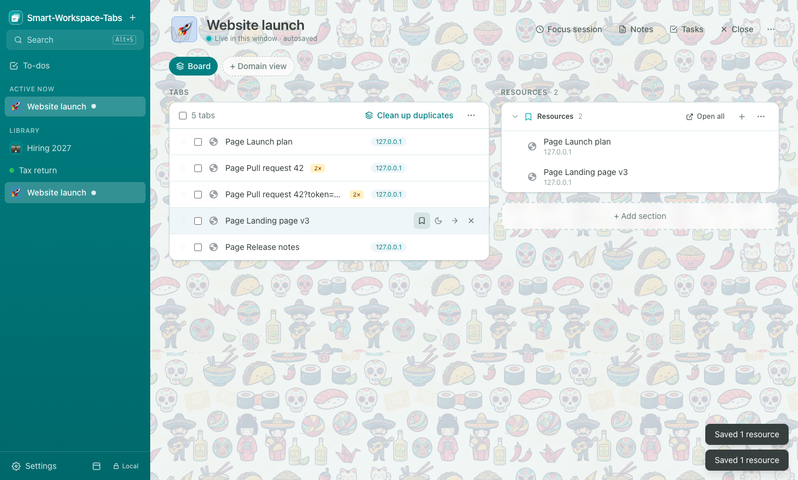
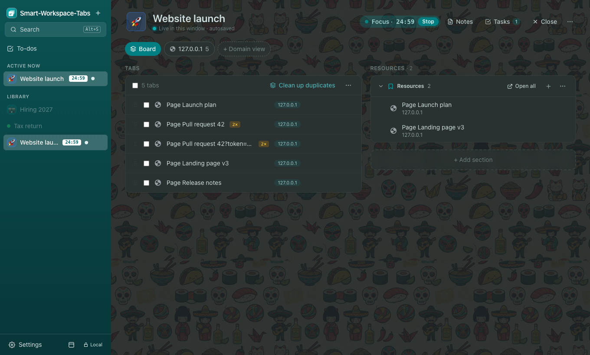
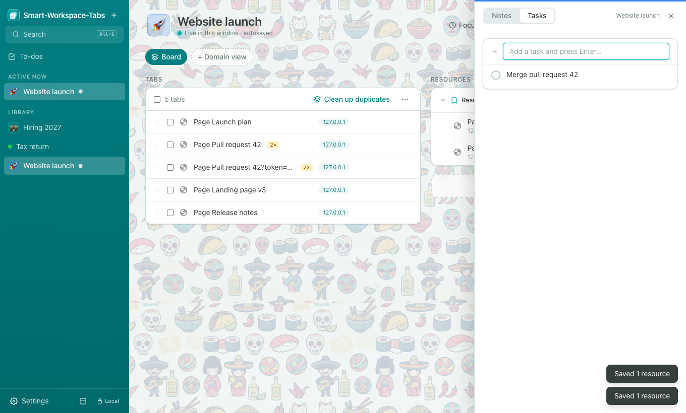
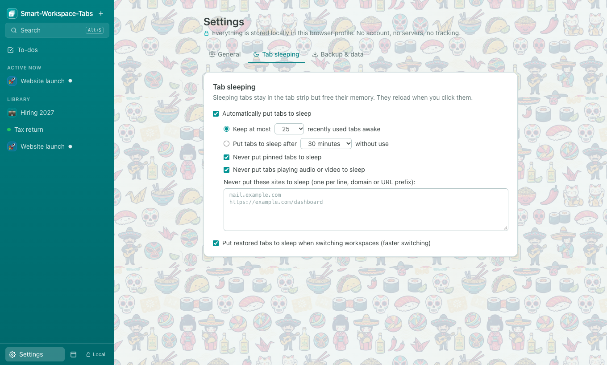

Cada proyecto merece su propio espacio de trabajo.
Transforma el caos de pestañas en espacios organizados por proyecto con enlaces guardados, notas y listas de tareas. Ahorra memoria RAM suspendiendo pestañas inactivas, elimina duplicados y nunca pierdas tu contexto. Tus datos jamás salen de tu navegador.

0 KB
Datos enviados a servidores externos
~0.5 s
Autoguardado inteligente en segundo plano
Hasta 80%
Menos memoria RAM con suspensión nativa
1 Clic
Convierte grupos de pestañas de Chrome
Diseñado para desarrolladores, investigadores y creadores
Olvídate de las pestañas perdidas o el navegador lento. Controla tus ventanas y sesiones con total libertad y privacidad.
Espacios de Trabajo Fluidos
Cambia entre proyectos en la misma ventana. El espacio actual guarda y cierra sus pestañas, restaurando al instante las del siguiente proyecto con pestañas fijadas y grupos intactos.
Limpieza de Pestañas Duplicadas
Detecta y cierra páginas repetidas en un espacio o en todas las ventanas. Compara URLs exactas o ignora parámetros de sesión y tokens con vista previa interactiva antes de cerrar.
Vistas por Dominio
Sigue un sitio web en específico (como github.com o notion.so) en todas tus
pestañas y subdominios. Acciones masivas: enfocar, guardar como recursos o limpiar duplicados.
Búsqueda Rápida (Alt+S)
Búsqueda difusa instantánea en pestañas activas, espacios cerrados, recursos guardados, tareas e historial. Pulsa Enter para ir directo a la pestaña, cambiando de espacio automáticamente.
Sesiones de Enfoque
Trabaja por bloques de tiempo (15, 25 o 50 minutos). Los temporizadores se muestran en la barra superior y lateral, atenuando los demás espacios para proteger tu concentración.
Suspensión de Pestañas (Ahorro RAM)
Libera gigabytes de memoria descargando procesos de pestañas inactivas. Mantiene despiertas pestañas con audio, fijadas o dominios personalizados que elijas.
Convierte Grupos de Pestañas en Espacios
¿Ya usas los grupos de pestañas nativos de Chrome? No empieces desde cero. Smart-Workspace-Tabs los detecta y los convierte en espacios independientes en un solo clic.
- Conserva el nombre, color y todas las pestañas del grupo original.
- Las pestañas fuera del grupo permanecen intactas en tu ventana.
- Organiza tus espacios creados en carpetas y colecciones personalizadas.

Elimina Pestañas Duplicadas con Seguridad
¿Has abierto el mismo documento o ticket de soporte varias veces? Nuestro limpiador elimina duplicados de forma inteligente con vista previa antes de cerrar.
- Coincidencia Exacta: Identifica URLs 100% idénticas en un espacio o en todas las ventanas.
- Ignorar Parámetros: Detecta la misma página aunque varíen tokens de sesión o enlaces internos.
- Protege siempre la pestaña activa y las pestañas fijadas.

Organiza tu Día con Sesiones de Enfoque
Mantente concentrado en una tarea a la vez. Elige tu bloque de tiempo, activa el temporizador y deja que la extensión minimice distracciones.
- Atenúa los espacios secundarios en la barra lateral para evitar cambios accidentales.
- Diálogo de confirmación que previene cambiar de ventana por impulso.
- Registra minutos de enfoque por espacio almacenados de manera local para tu control.

Diseñado para la velocidad y la claridad
Explora una interfaz cuidada con la paleta de colores azul verdoso inspirada en Grupo Ōkami, con modo oscuro y fondos personalizables.






Cómo funciona internamente
Arquitectura transparente que cuida los recursos de tu equipo y tu privacidad.
Instalación Segura
Al instalar por primera vez, cada ventana abierta se convierte en un espacio inicial. Ninguna pestaña se pierde ni se cierra accidentalmente.
Cambio en la Misma Ventana
Al cambiar de espacio, la ventana guarda las pestañas actuales, las cierra y reconstituye las pestañas del nuevo espacio sin parpadeos.
Control Total de tus Datos
Toda la información reside en IndexedDB de Chrome. Puedes exportar respaldos en JSON en cualquier momento o programar copias automáticas en Descargas.
Instala Smart-Workspace-Tabs
Disponible para Google Chrome y navegadores basados en Chromium (Brave, Edge, Arc, Vivaldi).
Chrome Web Store
Instalación oficial en un solo clic directamente desde Chrome Web Store con actualizaciones automáticas y sin configuraciones complejas.
Añadir a Chrome — Gratis¿Listo para un Chrome más rápido y ordenado?
Deja de perderte entre decenas de pestañas dispersas. Agrupa por proyecto, ahorra memoria y protege tu privacidad.